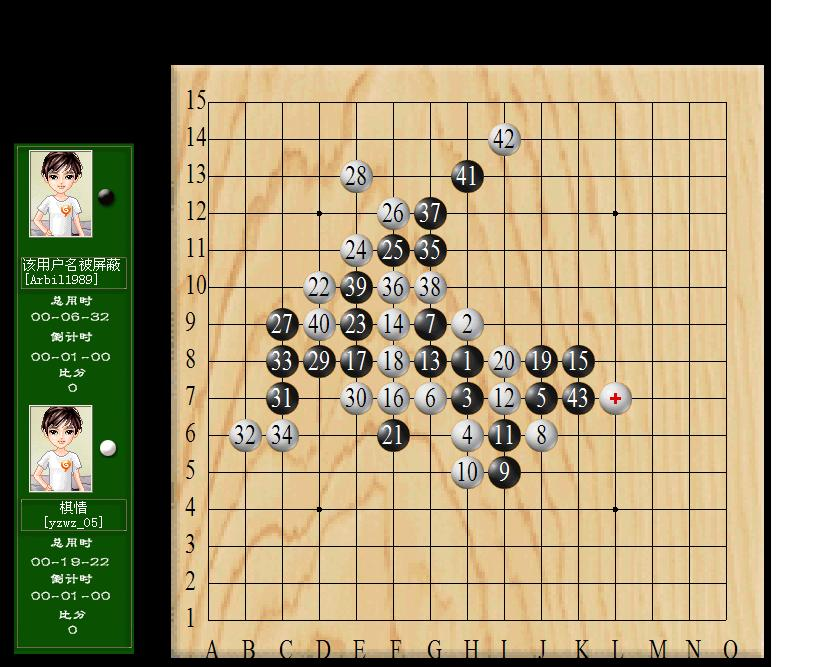

松三变化，目算VCF
#1 松三变化，目算VCF 作者：以和为贵 发表时间：2011-6-20 0:23:08
［ 掌棋宣传员 于 2011-6-20 1:47:31 时花20金币送鲜花一朵］
［ 掌棋宣传员 于 2011-6-20 1:47:32 时花20金币送鲜花一朵］
#2 Re:松三变化，目算VCF 作者：梧桐风 发表时间：2011-6-20 0:43:14
 现在流行跑联众了？
现在流行跑联众了？
#3 Re:松三变化，目算VCF 作者：屏蔽 发表时间：2011-6-20 0:49:50
我当时真算不出来……尼玛全是四四伤不起啊……#4 Re:松三变化，目算VCF 作者：厦门小天 发表时间：2011-6-20 0:58:45
这么快就直播了啊~~#5 Re:松三变化，目算VCF 作者：厦门小天 发表时间：2011-6-20 1:00:28
其实联众可以设置时间下棋，网速也不错，挺适合下慢棋的。#6 Re:松三变化，目算VCF 作者：以和为贵 发表时间：2011-6-20 1:11:22
RenLib给的参考答案：

#7 Re:松三变化，目算VCF 作者：算石 发表时间：2011-6-20 7:54:54
这个45可以吗！？
#8 Re:松三变化，目算VCF 作者：攻防肝胆两昆仑 发表时间：2011-6-20 10:14:10
=======上图对应的爱五子棋谱代码如下，以便你拆解：========
h8h9h7h6j7g7g9j6i5h5i6i7g8f9k8f7e8f8j8i8f6d10e9e11f11f12c9e13d8e7c7b6c8c6g11f10g12g10e10d9h13i14k7l7i9h10m5l6j5k4k5l5k9k6k10k11l9m10j11i12m8n7l8n8j10j9m7
======================================================
［ 以和为贵 于 2011-6-20 11:39:23 时花20金币送鲜花一朵］
#9 Re:松三变化，目算VCF 作者：岑小鱼 发表时间：2011-6-20 11:57:02
这个实战VCF有意思啊#10 Re:松三变化，目算VCF 作者：奇林 发表时间：2011-6-21 10:41:15
想复杂了吧 15上边两格跳3不是简单杀吗#11 Re:松三变化，目算VCF 作者：奇林 发表时间：2011-6-21 10:42:23
 哦 不好意思 看错题目了 原来要求是必须VCF
哦 不好意思 看错题目了 原来要求是必须VCF
#12 Re:松三变化，目算VCF 作者：鹏爷 发表时间：2011-7-13 4:01:21
=======上图对应的爱五子棋谱代码如下，以便你拆解：========
h8h9h7h6j7g7g9j6i5h5i6i7g8f9k8f7e8f8j8i8f6d10e9e11f11f12c9e13d8e7c7b6c8c6g11f10g12g10e10d9h13i14k7l7k9k6k10k11j10l9j11j9i11
======================================================
活三是关键
［ 以和为贵 于 2011-7-13 7:13:02 时花20金币送鲜花一朵］
#13 Re:Re:松三变化，目算VCF 作者：以和为贵 发表时间：2011-7-13 7:13:59
引用：
原文由 鹏爷 发表于 2011-7-13 4:01:21 :活三是关键
［ 以和为贵 于 2011-7-13 7:13:02 时花20金币送鲜花一朵］
当时实战确实是这么走的。